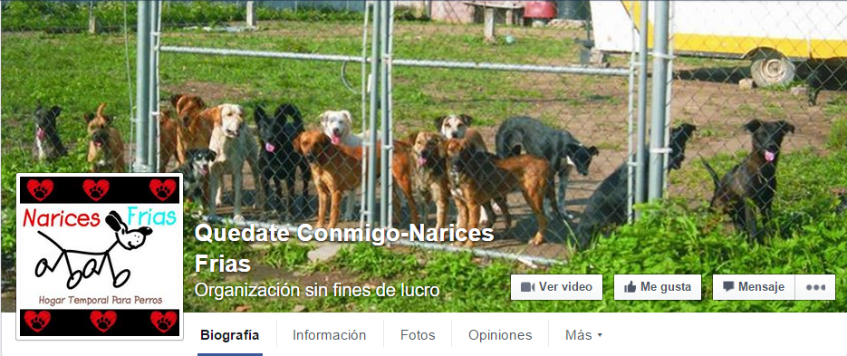
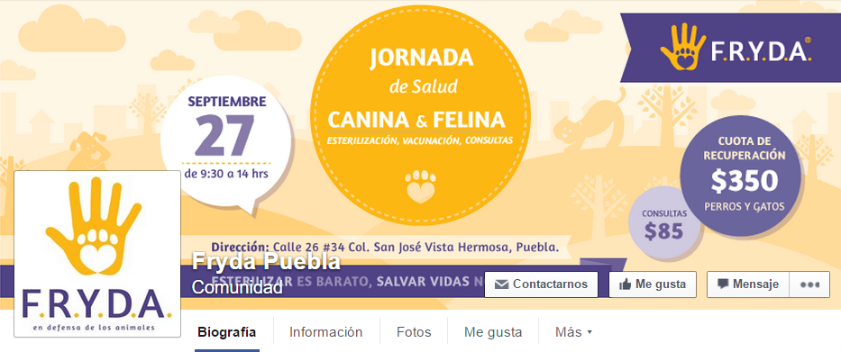
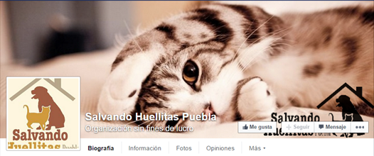
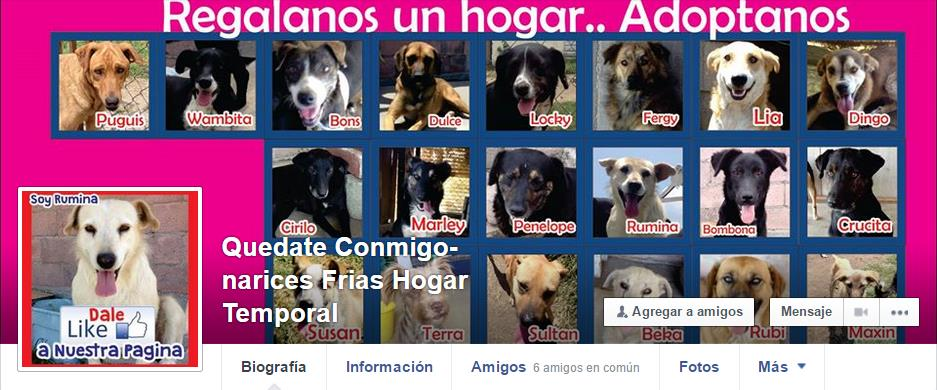
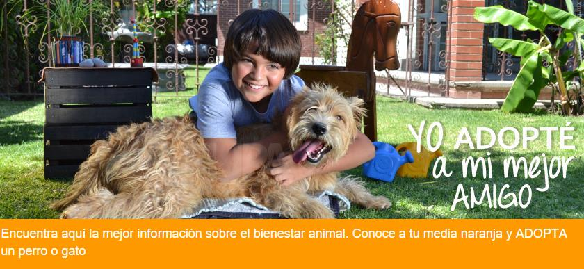

Adopción de perros
El hogar que necesitan
Refugios disponibles
-
Quédate Conmigo-Narices Frías
Rehabilitación y resguardo de perritos en situación extrema de sufrimiento para ser adoptados por un hogar.

Atlixco, Pue.
Teléfonos: 2441129163 y 2441024773 -
Fryda Puebla
Información: FRYDA (Fundación de Respeto y Defensa Animal) es una A.C. en Puebla que busca desarrollar una cultura de respeto y protección de la vida animal. Surge de la necesidad de proteger a animales domésticos en situación de maltrato o abandono, y busca desarrollar una cultura de protección activa de la vida animal.

Contacto:
PUEBLA, Pue. Tel: (222) 445.0308 Cel: (222) 445.0308
Email: info@fryda.org.mx
Web: http://fryda.org.mx Twitter: @FRYDApuebla -
Salvando Huellitas Puebla
Información: Salvando Huellitas Puebla, fundación protectora de animales encargada de ser la voz de los animales, No contamos con refugio ni oficinas. Somos una asociación Poblana dedicada a rescatar, rehabilitar, esterilizar y poner en adopción perros de la calle o que han sufrido de maltrato
Ubicación: Cuautlancingo, Pue.
Correo: salvandohuellitaspuebla@hotmail.com
 -
Quédate Conmigo-narices Frías Hogar Temporal
Información: Somos una asociación civil legalmente constituida. Tenemos como objetivos promover el bienestar animal, desde la promoción y difusión de condiciones óptimas de nuestras mascotas, participamos en programas y eventos que son generadores de bienestar animal, salud pública y concientización de la sociedad, entre otras cosas.
Ubicación: Atlixco, Pue.
 -
FUPA Puebla
Información: Encuentra aquí la mejor información sobre el bienestar animal. Conoce a tu media naranja y ADOPTA un perro.
Para ADOPTAR: adopta@fupa.org.mx
Para COLABORAR: colabora@fupa.org.mx
Mascotas PERDIDAS: perdidos@fupa.org.mx
Mascotas ENCONTRADAS: encontrados@fupa.org.mx
Correo general: contacto@fupa.org.mx
